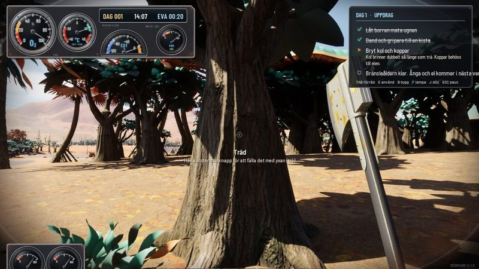

RÖDMARK
Raketen har kraschat på en skogsplanet. Fäll träd, bryt malm och bygg en fabrik som arbetar åt dig. Akta dig för stormen.
1–4 spelareöver internetuppdaterar sig självt
Ladda ner
Så gör du
- Högerklicka på zip-filen och välj Extrahera alla…
- Öppna mappen Windows och dubbelklicka på Rodmark.exe.
- Finns det en ny version hämtas den medan du spelar. Tryck UPPDATERA NU i menyn när den är klar.